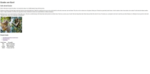
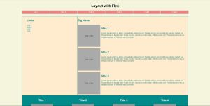

Assignment 1 - Basic HTML

Learning how to create a web page using HTML.
Assignment 2 - Basic CSS
Learning how to format a web page using CSS.
Assignment 3 - Page Layout

Learning how to make a flexable webpage suited for both mobile and desktop use.